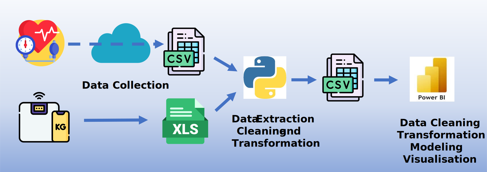
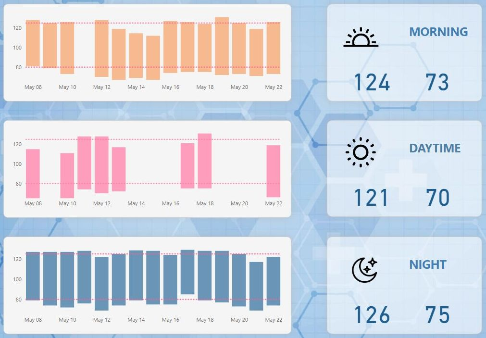
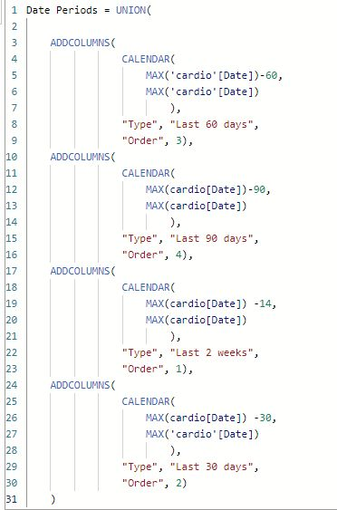

Cardio Health Tracker

Tracking cardiovascular health data, such as blood pressure, pulse, and body weight (or BMI), is crucial for the early detection and prevention of cardiovascular diseases. These metrics provide valuable insights into an individual's overall health and help identify potential risk factors. By tracking and analyzing these cardiovascular health data points over time, individuals can make informed decisions about their lifestyle choices, diet, exercise, and seek appropriate medical interventions if necessary. This proactive approach promotes better cardiovascular health and overall well-being.
Personal Health Monitoring System
This report predominantly tracks blood pressure, heart rate, and body weight over time, analyzes deviations, and detects trends. It consists of three pages. The first page shows the blood pressure for a specific period (14, 30, 60, 90 days). Target thresholds can be set, and two bar graphs indicate the difference compared to the thresholds. Red indicates values above the threshold, allowing easy identification of instances where the threshold is exceeded.
The second page provides a more detailed view of blood pressure. If data is available, it allows examination of blood pressure variance in the morning, during the day, and in the evening.
The third page presents the data in a more scientific manner. The goal is to detect trends in blood pressure (mean arterial pressure - MAP), body weight (BMI), and pulse.
Development Process
Github repository of this projectData collection & Preparation: The dataset is based entirely on my private data. Blood pressure and pulse data are collected using a blood pressure monitor and automatically uploaded to the manufacturer's (Beurer) website. The data is available for download in .csv format. Body weight data is collected using a smart scale/app but registered manually since there is no option to download the dataset.
Data Modeling & Analysis : The datasets are in a consistent format. To analyze them, I first transformed them using Python and saved them to .csv format. Then, I loaded the data into Power BI using Power Query, resulting in the following data model.

Here are a few examples from the development process
For the bodyweight data, For the body weight data, I used Python (Pandas) to extract and rename the columns and saved them to a CSV file. The blood pressure data required refinement to categorize the blood pressure reading times into three intervals: morning (2:00 – 10:00), day (10:00 – 18:00), and night (18:00 – 2:00, next day). I solved this using Python – see Github repository. The time of day screenshot provides more details.
Further data restructuring was done using Power Query, including pivoting, calculated columns, renaming, and setting the proper data type formats.
The data can be visualized for the last 2 weeks, 30 days, 60 days, and 90 days. The DAX code:
Results and Impact
Limitations and Possible Further Development
- Power BI has become so powerful lately that this entire project could be done using it alone, especially with Azure/Fabric.
- The data model could be improved and modified to be more efficient.
- The current version supports only one user, but more users could be added.
- Tracking can be expanded to include blood sugar data as well.
- The final product could be a comprehensive health tracker shareable with physicians.